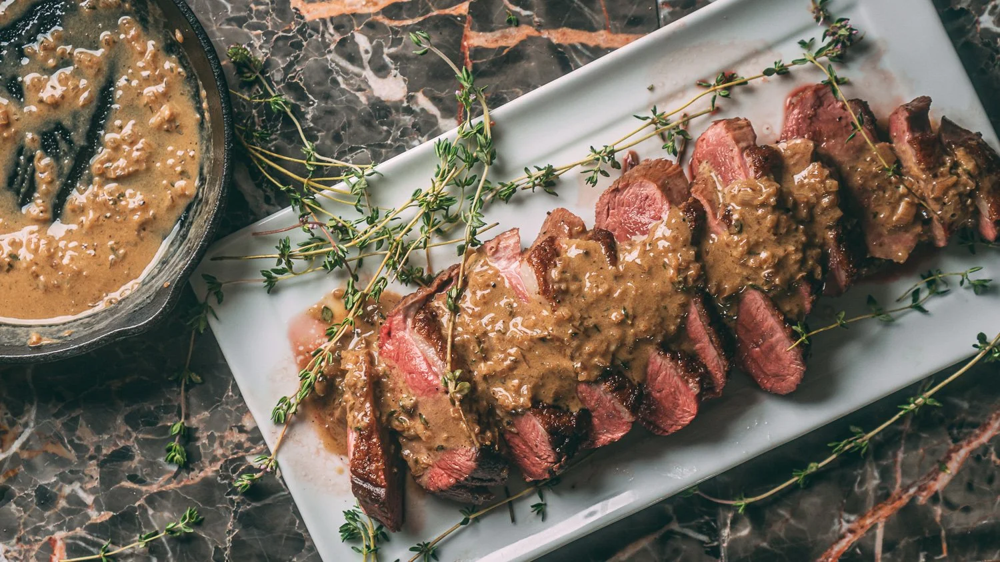

Grilled Salmon Fillet

Fresh Atlantic salmon fillet grilled to perfection with a delicate blend of herbs and fresh lemon sauce. Served with a medley of seasonal roasted vegetables including asparagus, bell peppers, and carrots. Chef Marcus Sterling's signature dish offers a perfect balance of smoky flavors and citrus freshness, complemented by our house-made hollandaise sauce.
Truffle Risotto

A luxurious creamy risotto made with premium Carnaroli arborio rice, infused with fragrant black truffles, aged Parmigiano-Reggiano, and a touch of garlic. Each spoonful delivers an umami-rich experience that showcases the earthy elegance of truffles. Chef Isabella Romano's masterpiece is finished with fresh parmesan shavings and truffle oil, making it an unforgettable culinary experience.
Pan-Seared Duck Breast

Tender duck breast with a perfectly crispy skin, pan-seared to a beautiful golden-brown. Accompanied by a sophisticated cherry gastrique sauce that provides a delightful sweet and tart contrast. The dish is completed with a roasted potato medley including fingerling potatoes and root vegetables. Chef Yuki Tanaka brings his expertise to create this elegant, restaurant-quality dish.